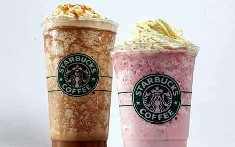
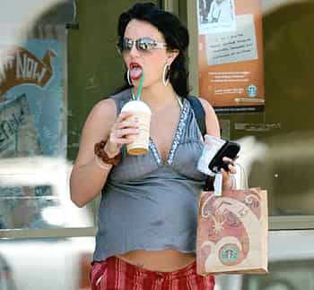
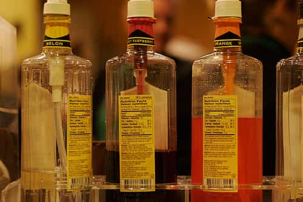

Daryush "Roosh" Valizadeh created ROK in October 2012. You can visit his blog at RooshV.com or follow him on Twitter and Facebook.







The Frankenstein drinks that Starbucks foists upon the masses consists of obscene amounts of sugar. In other words, they profit on the sale of sugar for sugarholic Americans. They deceive people into thinking that they are drinking “coffee.”
With most of their drinks masked by sweeteners, they have no incentive to refine their coffee product to have a robust taste that you could get in South America or Europe. The best thing that can happen for the future of coffee is if Starbucks goes out of business.
Don’t Miss: Jack Lalanne Predicting America’s Sugar Epidemic